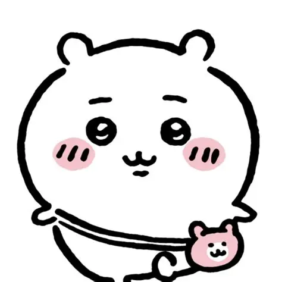
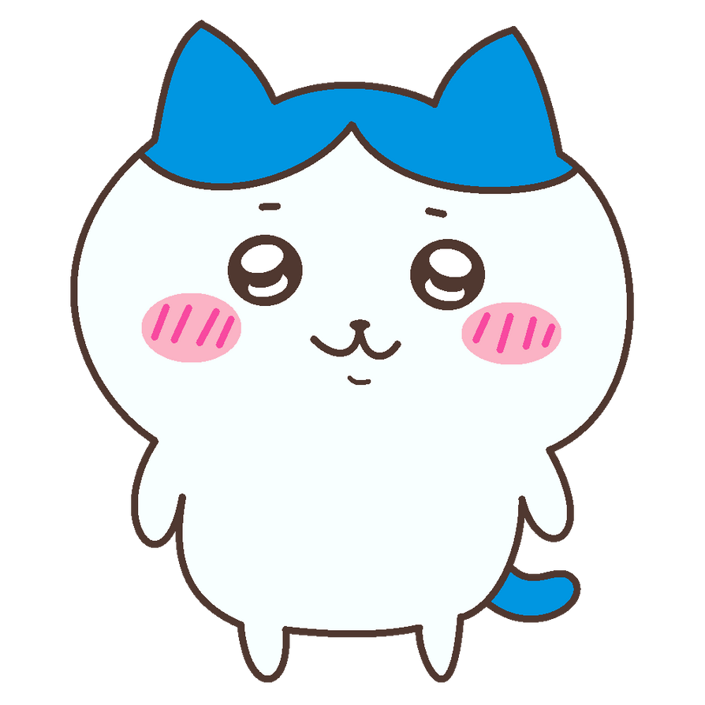

Chiikawa ちいかわ
'Something kind of small and cute'
Chiikawa is a small, timid character resembling a mouse or hamster. They are easily frightened, often cry, and mostly communicate through sounds and facial expressions. Chiikawa lives in a house won through a yogurt lottery and passed the fifth-grade weeding exam on their third attempt.

Hachiware ハチワレ
'Eight-split' or 'Broken-helmet'
Hachiware is a friendly, curious, and optimistic character who lives in a cave. They are a close friend of Chiikawa and often help others. Their design is inspired by a bicolor cat, and they enjoy photography and Charumera instant ramen. Like Chiikawa, Hachiware holds a Level 5 Weed Pulling Certification.
